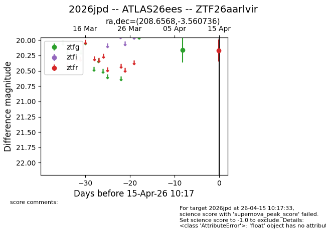
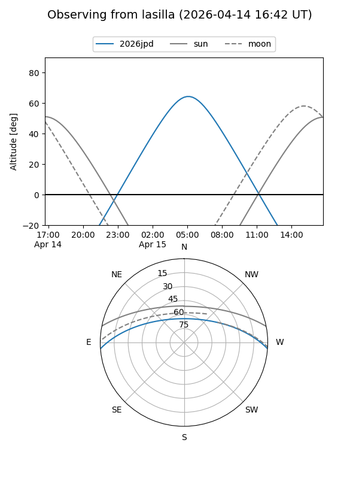
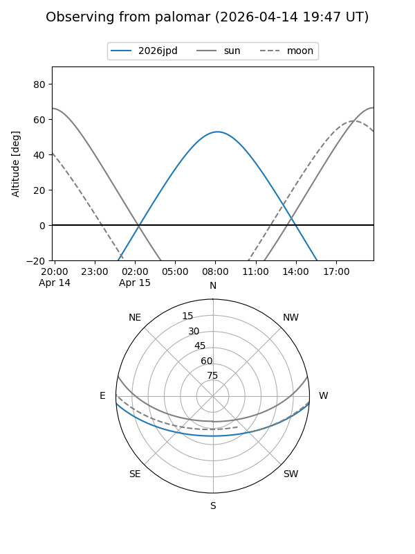

2026jpd
Target 2026jpd at 2026-04-15 10:30
Aliases and brokers:
FINK: link
Lasair: link
ALeRCE: link
TNS: link
YSE: link
alt names
ZTF26aarlvir (ztf,fink_ztf)
2026jpd (tns,yse)
ATLAS26ees (atlas)
Coordinates:
equatorial (ra, dec) = 208.6568,-3.56074
equatorial (HMS+DMS) = 13:54:37.63,-03:33:38.65
galactic (l, b) = (331.7834,+55.73080)
Flags:
Photometry:
last ztfg=20.16, ztfr=20.17
1 ztfg, 1 ztfr detections
Lightcurve

Visibility


Additional plots